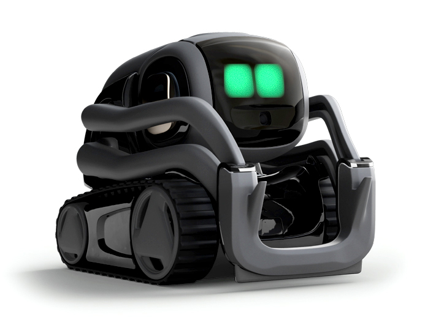

We here at Rolexx Consulting Services are a committed team of financial experts dedicated to bringing you the best experience and results possible. With a combined 86 years of financial consulting experience and a dozen degrees across our team, we are a premium service our customers can trust. We want you to see us not just as your consultants but as a valued associate who will put you first.
Using cryptography to keep exchanges secure, blockchain provides a decentralized database, or “digital ledger”, of transactions that everyone on the network can see. This network is essentially a chain of computers that must all approve an exchange before it can be verified and recorded. In the case of Bitcoin, blockchain stores the details of every transaction of the digital currency, and the technology stops the same Bitcoin being spent more than once. Many see Blockchain as the key to a connected digital future that could eventually permeate all aspects of society.

Autonomous things, abbreviated AuT, or the Internet of autonomous things, abbreviated as IoAT, is an emerging term for the technological developments that are expected to bring computers into the physical environment as autonomous entities without human direction, freely moving and interacting with humans and other objects. Famous examples include Tesla model 'Autopilot' cars, described as such 'Autopilot advanced safety and convenience features are designed to assist you with the most burdensome parts of driving. Autopilot introduces new features and improves existing functionality to make your Tesla safer and more capable over time. Your Tesla will match speed to traffic conditions, keep within a lane, automatically change lanes without requiring driver input, transition from one freeway to another, exit the freeway when your destination is near, self-park when near a parking spot and be summoned to and from your garage.', and Amazon's six wheeled delivery drone Scout, being trialed in specific locations, capable of navigating footpaths and even safely crossing the road at speeds of up to 16 kilometres per hour.
The immersive experience is a sense of amplified realism enabled by use of mixed reality, augmented reality and virtual reality. Immersive Experience creates an enhanced world and changes how we interact with it in three full dimensions using each of our senses, aided by Machine Intelligence.